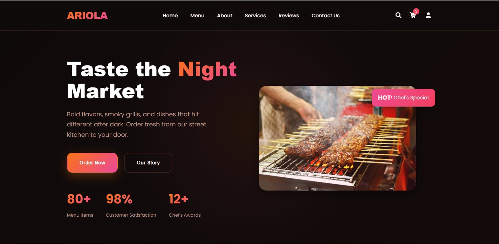
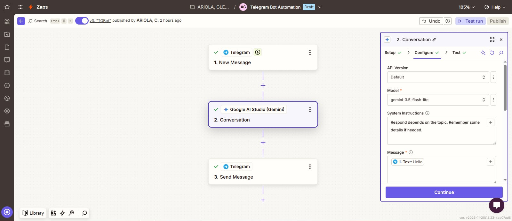
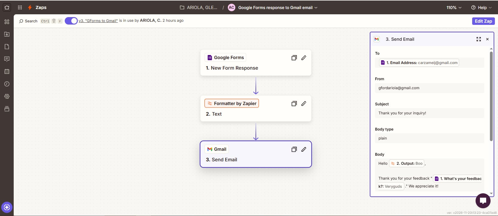

BiteMarket (E-commerce Website)
A standalone e-commerce website built to practice frontend structure, responsive layouts, and user-facing shopping flows.
Link: CLICK HERE
Repository: CLICK HERE
A recent IT graduate exploring the intersection of frontend development, game development, and workflow automation. I enjoy turning ideas into useful, interactive experiences.
A selection of projects that reflect what I enjoy creating.

A standalone e-commerce website built to practice frontend structure, responsive layouts, and user-facing shopping flows.
Link: CLICK HERE
Repository: CLICK HERE

An automated Telegram bot designed to handle messages, respond to user commands, and simplify everyday tasks through efficient workflows.
Link: CLICK HERE
A Roblox game project currently in development, built as a hands-on way to explore gameplay systems and player experience.

An automation practice project that connects Google Forms submissions to email notifications (Gmail), helping reduce repetitive manual steps.
Link: CLICK HERE
I like learning how digital products work, from the interface people interact with to the logic and workflows behind them.
Building responsive, accessible, and user-friendly web interfaces with a focus on clean layouts and practical functionality.
Creating interactive gameplay experiences and experimenting with mechanics, scripting, and game systems in Roblox Studio.
Connecting tools and simplifying repetitive tasks using platforms such as Zapier, n8n, and Make.
Tools and technologies I've worked with or am actively exploring.
I'm Glenn, an Information Technology graduate with an interest in building useful and engaging digital experiences. I enjoy frontend development because it lets me turn ideas into interfaces people can use.
Outside of web development, I explore game development and workflow automation. Whether I'm scripting a game mechanic or connecting apps to simplify a task, I enjoy learning by building and improving through practice.
I'm currently looking for opportunities where I can contribute, keep learning, and grow as a developer.
A simple overview of my development journey. Add formal employment, internships, or freelance work here when applicable.
Practicing frontend development, building Roblox game projects, and experimenting with workflow automation tools.
Worked on Safehaven, an Web and Game capstone project involving PHP, postgreSQL, and database technologies.
Continuing to improve responsive web development skills and learning how to connect services through automation platforms.
Gained hands-on experience in providing technical support, troubleshooting computer issues, assisting with hardware and software maintenance, and helping ensure smooth daily IT operations.
Keep this section factual. Add certificates, training, awards, or relevant credentials as you earn them.
Dalubhasaan ng Lungsod ng San Pablo · Graduate
Basic Bookkeeping - Learn Business Recording with Peddlr - 2023
Advanced Bookkeeping - Learn Business Recording with Peddlr - 2023
I'd be happy to connect, discuss ideas, or hear about opportunities where I can contribute and continue growing.